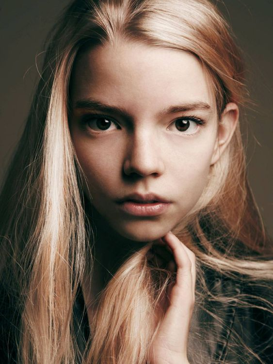

Anya Taylor-Joy nació en Miami (Estados Unidos) siendo la menor de seis hermanos. Su madre, Jennifer-Marina de Joy, trabajó como fotógrafa y diseñadora de interiores y tiene ascendencia inglesa y española y su padre, Dennis Alan Taylor, es un exbanquero internacional de origen argentino y escocés.
Su familia se mudó a Argentina cuando era recién nacida. De su infancia allí recuerda, «Adoro a mi familia, aunque me pasé la vida rodeada de adultos. Nunca me sentí como una niña. No me quejo, solo que estuve mucho tiempo sola, a mi aire, jugando en bosques donde me inventaba criaturas, brujas, seres mágicos. Me montaba obras enteras en español. Y mientras mi familia era muy deportista, yo era un ratón de biblioteca». Su etapa escolar la inició en el colegio Northlands School, en Olivos, provincia de Buenos Aires. Pero cuando tenía seis años su familia se mudó a Londres. Al respecto, ha dicho: «Me sentí tan confusa y desplazada...Solo quería volver a casa». Decidió durante dos años no aprender inglés con la esperanza de que sus padres la mandaran de vuelta a Argentina.
En Inglaterra asistió a la Hill House School, antes de acceder a la Queen's Gate School. A los dieciséis años, fue convencida para ser modelo por Sarah Doukas de Storm Model Management, cuando salía de los almacenes Harrods. Fue a través de su trabajo como modelo que conoció y firmó un contrato con un agente de actores.
